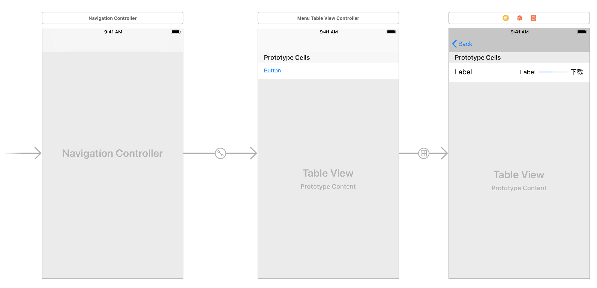
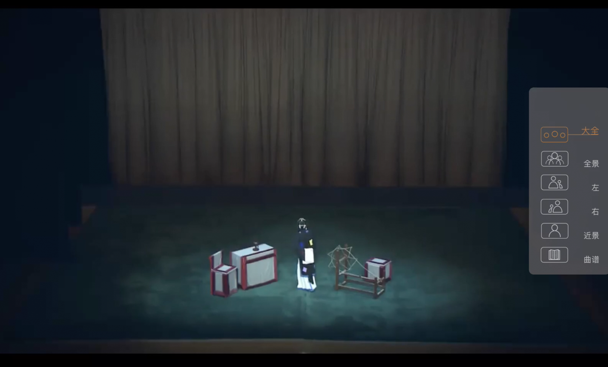

梅派《生死恨》教学APP的多视角视频和可视化唱腔的设计与实现
龚嵘1、张啸宇2、Rafael Caro Repetto1、张晶2、Xavier Serra11 Music Technology Group, Universitat Pompeu Fabra, Barcelona, Spain
2 中国戏曲学院，北京
摘要
我们在此文介绍北京市社会科学基金项目《生死恨的音视频与电脑辅助教学研究》的第三部分工作 -- 多视角视频和可视化唱腔音频教学iOS APP的设计与实现。此项目为中国戏曲学院同巴塞罗那Universitat Pompeu Fabra（庞贝法布拉大学）音乐技术组的合作项目。项目的第一和第二部分为《生死恨》剧目唱腔分析和教学、演出音视频录制工作，分别由中国戏曲学院的张晶和张啸宇老师负责完成。在前两个阶段中录制的音视频资源是本APP制作的基础。在此文中，我们首先对音视频在音乐或戏曲教学中的应用文献进行总结，随后介绍APP的框架和实现方法。
文献综述和简介
我们发现多篇论文论述了音乐或戏曲教学音视频在教学中的辅助作用。《多媒体技术在高校声乐教学中的应用探索》[1] 一文指出多媒体教学资源在课下有延伸性，让学生在课下也能获得优质的教学资源。《多媒体技术在声乐教学中的运动探索》[2] 一文引出了传统声乐教学中的三个难题 -- 学生对歌唱发音和用嗓没有形象直观的了解；学生对自己的声音没有客观的认识；学生在课后缺乏正确的指导。随后作者分别论述了多媒体音视频技术在解决这些问题时发挥的作用。
我们认为对戏曲教学音视频录制技术的探索－多机位、多视角互动音视频，音乐信息提取技术（旋律、节拍、响度的图形化表示和唱词音频对位）在梅派唱腔上的应用可以检验这些在西方音乐研究中的常用技术在梅派唱腔教学上的有效性。通过旁听中国戏曲学院的专业唱腔课，我们发现学生在课下练习时多使用网络视频或课上用手机录制的音频。然而网络视频存在以下缺点：1）唱段零散，演出视频没有专业老师的指导。2）经过剪辑和编排的网络教学视频同真实课堂的示范有差异，不能按照使用者的需要自由切换观看角度。3）舞台表演视频对演员的演唱方式没有特写。或是由于化妆、服装、道具的遮挡，演唱的细节，例如嘴形，不能被观察到。4）手机录制的音频随意，音质差，缺乏整理，不利于传播。对特定教师的课堂教学以专业的多角度音视频录制能解决以上问题。最前沿的音乐信息提取技术能以图形化直观的方式体现老师和学生演唱的各个维度，帮助学生集中精力在练习本身。比如歌词对位技术可以将唱词的起始位置在音视频中标注，从而避免了通过试听素材来确定唱词位置的不便。
音乐信息提取技术可以将唱腔概念以图形化的形式展现给师生。图形表示对老师的言传身教有辅助作用。例如利用音高曲线，老师可以更好地解释唱腔中的音调变化 [3]。前人在此方面也有类似的研究。Callaghan, J. et al. [4] 和Welch, G. F et al. [5] 借助实时的音高曲线、频谱图和声母频率图辅助老师进行声乐教学。
通过在中国戏曲学院的调研，我们发现京剧的发音是师生最关注的方面 [6]。老师在讲授唱段时需有明确指出唱词中的尖团字和上口字。同时呼吸（气口）也是教学中师生非常关注的方面。结合调研结果，我们在唱腔的图形中化中除了展示音高和音量之外，也标注唱词中的尖团字、上口字和气口位置。
APP的框架
APP包含三个层次的内容（见图1），（1）主题选择，（2）唱段选择和（3）机位视频选择。具体的主题有头面介绍、化妆介绍、服装介绍、动作教学、便装教学、带装教学。

图1：APP内容框架图。APP包含6个主题，前两个包含单机位视频，后四个包含多机位视频。便装和带装教学主题包含剧目唱段。
头面和化妆是单一摄像机视角。服装、动作、便装和带装教学主题包含多摄像机视角的视频。所有的的视角有：大全，全景，近景，左特写，右特写，脚特写，乐队，学生，乐队。便装教学和带装教学视频包含生死恨的不同唱段，每个唱段都有多摄像机视角的视频。
对于示范重点唱段《耳边厢又听得初更鼓响》，我们添加了对韩玉娘演唱分析的可视化，见图2。内容包括其演唱的音高曲线、音量大小（由音高曲线的粗细表示）、唱字、尖字和上口字标注、换气标注和板眼位置。
图2: 《耳边厢又听得初更鼓响》韩玉娘演唱的可视化分析。分析元素包括唱字，特殊发音（上口），音高曲线（白色，当前唱字部分红色），音量大小（音高曲线粗细），板眼线（蓝色竖线，粗为板，细为眼），音高基准线（白色横线）。
APP的实现
APP的图标、启动图片和背景图片由中国戏曲学院设计。主要构成为张晶老师穿着韩玉娘服装的半身和全身像、《耳边厢又听得初更鼓响》一出戏中所使用的纺车和具有中国特点的水墨山水画。
APP代码使用Swift 4编写。界面导航为一个Navigation controller。导航的起点为主题的TableViewController，点击每个主题的Cell之后跳转到细节或每个唱段的TableViewController。视频播放显示在一个修改后的AVPlayerViewController。点击唱段的播放Cell后，直接Show segue到这个AVPlayerView。多摄像机视角的切换由一个OverlayView实现。这个OverlayView中包含多视角的按钮，点击按钮后切换到相应视角的视频。这个OverlayView附加在AVPlayerViewController上。APP的流程见图 3，多视角视频切换界面见图4。
图3：APP实现流程图。APP的浏览由一个Navigation controller构成。首先进入的界面是主题选择TableView（中间）。点击主题Cell进入下一级TableView，负责唱段的选择（右图）。最后一个Cell负责从服务器下载视频和弹出视频。
图 4: 多视角视频和视频切换OverlayView（右）。
由于视频占用空间较大，若放在APP中不方便下载。我们将所有视频放置于Universitat Pompeu Fabra大学的服务器中，用户可以点击唱段Cell右边的下载按钮进行下载。下载功能由Alamofire在APP后台实现，不耽误用户在下载的同时观看其它视频或使用其它APP。
总结
我们在本文中介绍了生死恨教学APP的设计和实现。设计包括（1）如何将各教学视频按照目录结构放置于APP中，结合导航以方便浏览；（2）对重点唱段如何可视化韩玉娘唱腔的音高、音量、板式和唱字。实现包括APP图标、背景的设计，APP导航流程和视频播放的多视角视频的切换。此设计思路可以应用于其它剧目的APP制作。
参考文献
[1]沈思，朱琨《多媒体技术在高校声乐教学中的应用探索》，音乐大观，2014年第7期
[2]郭俪雅，《多媒体技术在声乐教学中的运用探索》，中国音乐，2005年第2期
[3] Wilson, P., Lee, K., Callaghan, J. and Thorpe, W. Learning to sing in tune: Does real-time visual feedback help? Journal of Interdisciplinary Music Studies. Spring/Fall, 2 (1&2), art. #0821210, 157-172. 2008
[4] Callaghan, J., Thorpe, W. and Doorn, J. V. Applications of Visual Feedback Technology in The Singing Studio. Australian Association for Research in Music Education: Annual Conference, Newcastle, September 21-24, 2001
[5] Welch, G. F., Himonides, E., Howard, D. M., & Brereton, J. VOXed: Technology as a meaningful teaching aid in the singing studio. In Proceedings of the conference on interdisciplinary musicology (cim04). April, 2004
[6] Gong, R. and Serra, X., Identification of potential Music Information Retrieval technologies for computer-aided jingju singing training. arXiv preprint arXiv:1711.07551. 2017.